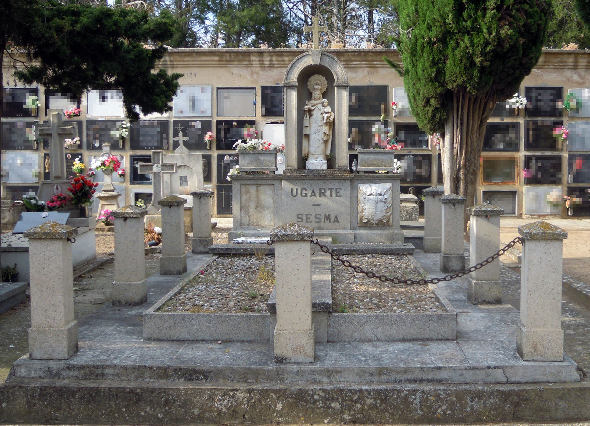
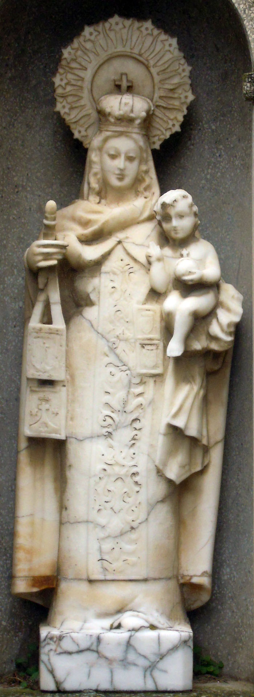
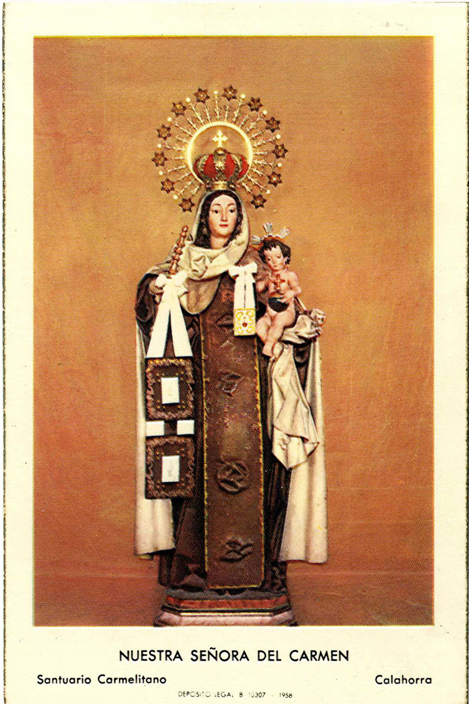
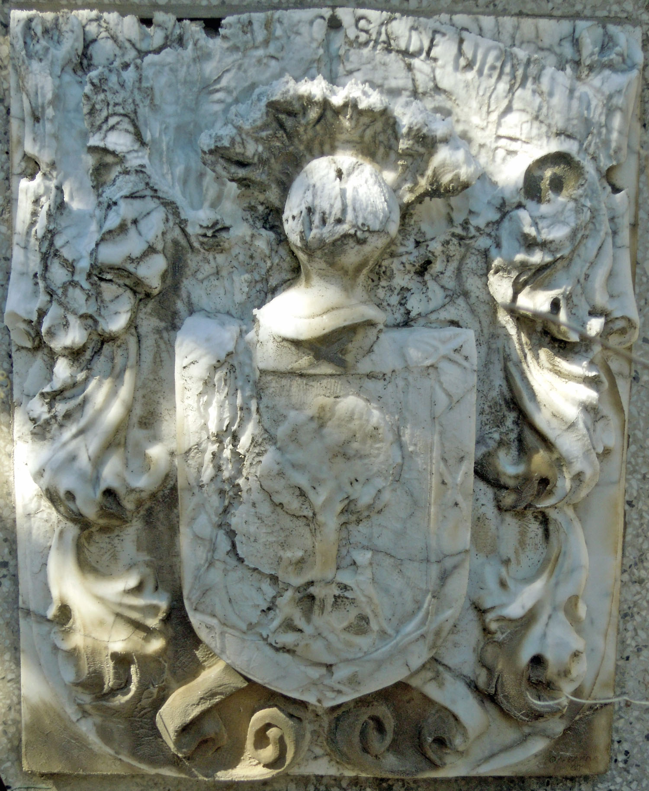
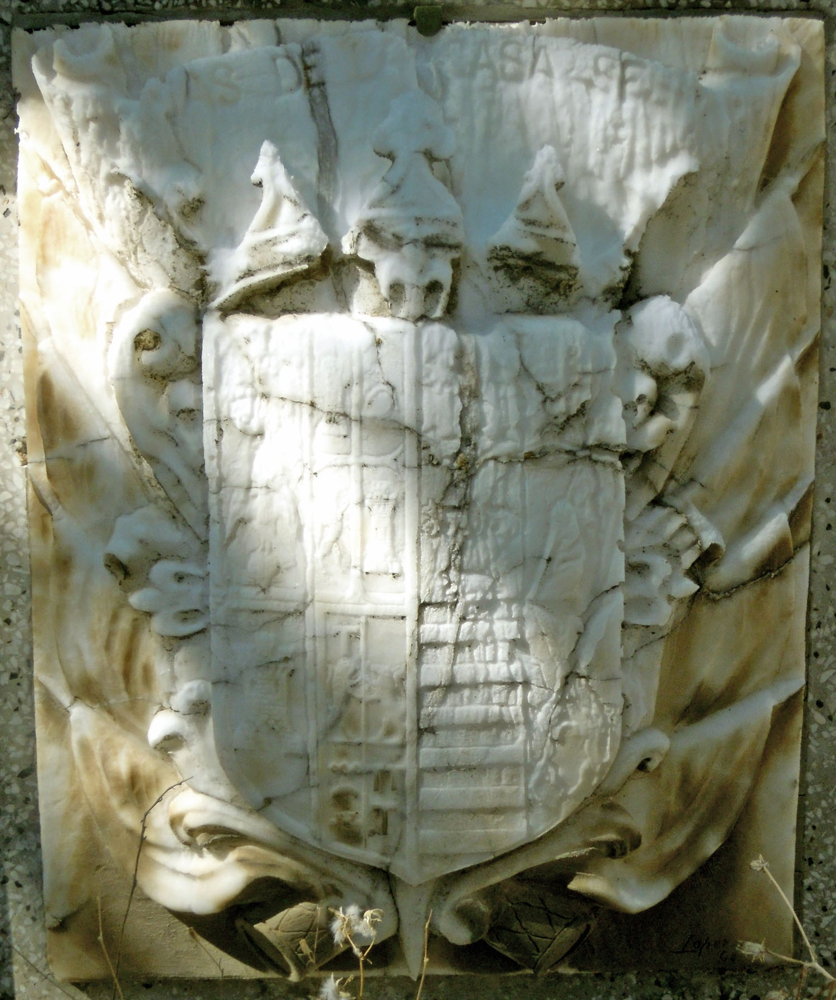

El panteón Ugarte Sesma fue erigido por José Ugarte y Ugarte, uno de los grandes propietarios de Calahorra a finales del siglo XIX. Estuvo avecindado en la calle Grande nº 7 con su esposa, Dolores Sesma, y sus hijas María, Basola y Clotilde. José Ugarte fue elegido concejal en 1893 y donó los terrenos para la construcción del cementerio de La Planilla, reservándose una pequeña parcela en su interior en la que está ubicada su sepultura . Ya que José Ugarte falleció antes de 1907, es de suponer que su sepultura sería erigida en los últimos años del siglo XIX o los primeros años del XX, y lo cierto es que el escultor Quirino Ruiz de Cenzano dio trazas para una capilla-panteón . Sin embargo, la sepultura actual dista mucho de ser una capilla y su apariencia es muy posterior. Podría haberse erigido en los años 30 y remodelado hacia 1968, si no fue construida enteramente en esta última fecha.

El panteón de José Ugarte es una sepultura de planta rectangular, que responde a la tipología de panteón monumental por sus grandes dimensiones. Consta de un basamento rectangular solado con baldosas, sobre el que se sitúa una breve cama de piedra artificial, cubierta con guijarros a modo de jardín y decorada con una gran cruz latina de cemento en relieve, dividiendo la cama en cuatro partes. El terreno de la sepultura estaba hasta 2012 delimitado por pilas de piedra unidas por pequeñas cadenas, actualmente desaparecidas.
La cabecera está realizada en piedra artificial y cuenta con un basamento de planta dinámica, avanzada en el centro, donde se encuentra la inscripción "Ugarte-Sesma". Los lados, ligeramente retranqueados, albergan sendos escudos. Sobre este basamento aparecen maceteros rectangulares a los lados y, en el centro, una hornacina en arco de medio punto sobre pilastras cajeadas, rematada con una cruz latina potenzada. En la hornacina encontramos una imagen de buena calidad de la Virgen del Carmen en alabastro. La Virgen ha sido representada de pie, vestida con túnica que presenta cenefa central bordada y se ajusta al cuerpo mediante ceñidor. Sobre la túnica porta un manto y cubre la cabeza con una pequeña toca de orillo bordado. Porta corona imperial rematada en cruz y nimbo con rayos ondeantes, alternando los doce terminados en estrellas con los que no tienen nada . El cabello, suelto y ondulado, cae a ambos lados de un rostro dulce y de facciones redondeadas y suaves, con boca pequeña y carnosa, nariz recta y ojos entrecerrados. Porta una vara o rollo y un escapulario en la mano derecha y sujeta al Niño con la izquierda, en postura inestable. El Niño ha sido representado desnudo y sedente, con la bola del mundo en la mano izquierda y la derecha en actitud de bendecir. Es un niño de cabellos cortos y ensortijados, rostro sereno e idealizado. A pesar de su indudable calidad, la imagen resulta fría, y contrasta vivamente el detalle y dulzura de los rostros, así como la calidad del escapulario o la tira bordada en la túnica de la Virgen, con el escaso detalle con el que se ha trabajado la parte inferior de la figura, de apariencia cilíndrica sobre una peana cúbica, o la inestable colocación del niño. A ello se suma la gran degradación que sufre debido a la erosión provocada por las inclemencias atmosféricas. La imagen parece haber sido tallada tomando como modelo las fotografías y estampas realizadas a partir de su coronación como Reina de la Ribera en 1957.

Los escudos de la cabecera están realizados igualmente en alabastro y presentan un deterioro importante. En el lado derecho de la sepultura (izquierda del espectador), se encuentra el blasón de los Ugarte, bajo filacteria con la inscripción "(Armas de) la casa de Ugarte". Es un escudo con bordura de ocho aspas, árbol en sinople y dos lobos acostados empinados al tronco, timbrado con yelmo y lambrequines. Aunque el apellido Ugarte tiene representaciones heráldicas muy variadas, en función de la localidad de origen de la familia, el conservado en Calahorra es como el blasón de las casas de Antzuola y Vergara en Guipúzcoa.

El escudo situado en el lado izquierdo de la sepultura representa las "Armas de la casa Sesma" como indica la inscripción superior. El escudo es cuartelado de ocho. El primer cuartel estropeado y águila perchada sobre un corazón. El segundo es cuartelado mediante cruz patada: torre donjonada, luna creciente ranversada, león rampante y torre donjonada. El tercero siete lobos arrestados. El cuarto cruz de Santiago sobre otro elemento perdido. El quinto torre donjonada. El sexto cuartelado en cruz: con tau sobre león rampante en el primero; león rampante en el segundo; ¿cadena? sobre luna creciente ranversada y bajo escaques en el tercero; y tres taus en el tercero. El séptimo fajado. El octavo perdido. Está timbrado con corona de marqués, acolado sobre cruz de Santiago y rodeado de banderolas y dos tambores en la punta externa del escudo.
Ambos escudos están firmados y fechados en el ángulo inferior izquierdo con la inscripción “Loperena 68”, lo que los identifica como obra de Antonio Loperena Eseverri (Arguedas, 1922 - Tudela, 2010), pintor y escultor navarro que, para Calahorra, realizó también el Monumento a Quintiliano de la Glorieta del Ayuntamiento (1969) y el de Félix Rodríguez de La Fuente (1986) .
[1] LÓPEZ RODRÍGUEZ, P. Calahorra Levítica y Liberal. Cambio socioeconómico y caciquismo liberal en La Rioja Baja 1890-1923. Calahorra: Amigos de la Historia de Calahorra, 1997. p. 151. Archivo Municipal de Calahorra. Cod. 2.1.4.13. Padrón de 1892; Sig. 441/3, fol. 18. Padrón de 1897; Sig. 442/1, fol. 16. Padrón de 1901; Sig. 442/3, s/f; calle Julio Cesar nº 7. Cod. 2.8.0.2. Escritura de cesión de terreno para el cementerio; Calahorra, 7 de noviembre de 1895. Leg. 1341/26. El terreno reservado se encontraba en las manzanas delimitadas por las tapias este y norte, la capilla y la calle de San Diego.
[2] Este escultor logroñés debió establecerse en Calahorra hacia 1895. Durante los años 1897-1898 dirigió una Academia de Dibujo en el “Salón Museo” facilitado por el ayuntamiento de la localidad. Tras el incendio de la catedral y junto a Julián de Felipe y Celestino Escobés, se encargó del altar provisional del templo y en agosto de 1900 trazó el nuevo retablo, traza que presentó al cabildo el deán Palacios Cabello y que no fue ejecutada por problemas económicos. En 1901 sigue empadronado en Calahorra pero consta como residente en Cáseda (Navarra). No debió ser muy larga su permanencia en Calahorra puesto que en la segunda década del siglo XX estaba establecido en Logroño, en la calle Marqués de San Nicolás nº 123. Esta casa se corresponde con el actual nº 58 de la citada calle y la recibió como herencia de Eugenio Ruiz de Cenzano en 1904. Archivo Municipal de Calahorra. Cod. 2.1.4.13. Padrón de 1897; Sig. 442/1, fol. 263 (calle Cabezo nº 3). Padrón de 1901; Sig. 442/3, s/f; calle dean Palacios nº 4. La Rioja, 7 de noviembre de 1897, 16 de noviembre de 1898, 21 de junio de 1900. Guía de La Rioja. Separata de Guía Regional de España (pp. 1000-1124). 1912, p. 1.028. Anuario de la Vida Oficial, el comercio y la industria de la Provincia de Logroño. Logroño: Hijos de Alesón – El Riojano, 1915, p. 53. Guía Regional: Aragón, Cataluña, Navarra, Rioja y provincias vascongadas. Zaragoza: s.i., 1917, p. 789. La traza para el panteón Ugarte fue realizada en 1897-1898. Archivo Municipal de Calahorra. Cod. 2.4.4.5. Carta de don José Ugarte al Ayuntamiento; Calahorra, 1 de abril de 1899. Leg. 669/11. ÁLVAREZ CLAVIJO, M.T.; SALAS FRANCO, M.P. Estudio Histórico-Artístico del Casco Antiguo de Logroño: Mercaderes, Barriocepo y Casa de la Virgen. Logroño. Instituto de Estudios Riojanos, Ayuntamiento de Logroño, 2000. (2ª edición 2001), p. 230-232.
[3] La corona estrellada hace referencia al Apocalipsis de San Juan, 12-1 (“…una mujer vestida de sol y la luna debajo de sus pies y sobre su cabeza una corona de doce estrellas…”), razón por la cual las imágenes de la Virgen llevan doce estrellas en el nimbo, representando la santidad y la divinidad. No debe olvidarse que la imagen de la Virgen del Carmen del convento calagurritano fue proclamada “Reina de la Ribera” el 15 de julio de 1956 y coronada canónicamente como tal el 16 de Julio de 1957. La corona que ostenta la imagen del camposanto podría haberse inspirado directamente en la de la imagen conventual. Santo Judas Tadeo.
[4] MURUZÁBAL DEL SOLAR, J.Mª. “Antonio Loperena: Escultura pública e imaginería religiosa en Navarra”. En Revista del Centro de Estudios Merindad de Tudela. Nº. 13, 2005, pags. 159-187.